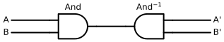
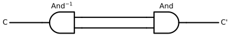
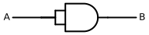

We have now established that within the framework of Conjugated Carbon Computing (CCC), our computational substrate operates on protobits rather than classical binary bits. This shift unlocks a rich landscape of entirely non-classical behaviors. Let us explore some of these exotic properties
We previously revisited fundamental logic gates in “A Refresher on Boolean Logic”. However, we have now established that within the framework of Conjugated Carbon Computing (CCC), our computational substrate operates on protobits rather than classical binary bits.
At their baseline, these boolean gates rely on the exact same transition matrices introduced earlier. Yet, because they are embodied in real quantum-molecular networks, they natively handle continuous probability distributions as well as genuine quantum phenomena such as coherent superposition and entanglement.
This shift unlocks a rich landscape of entirely non-classical behaviors. Let us explore some of these exotic properties:
Full I/O Inversion (Reverse Computing)
Because our molecular transition matrices are bidirectional, it is now possible to completely flip the roles of inputs and outputs.
Inverted AND Gate
In this reverse configuration, we drive the circuit from the single terminal \(C\) on the left, and observe the resulting quantum superposition across terminals \(A\) and \(B\) on the right:
Code
with schemdraw.Drawing() as d: d.config(fontsize=12, unit=2.5)# 1. Place the 2-input AND gate oriented to the LEFT and_gate = d.add(logic.And().left())# 2. Input line on the left (connected to the single terminal, formerly Output C) d.add(elm.Line().left(1.5).at(and_gate.out).label("C", loc="left"))# 3. Output lines on the right (formerly Inputs A and B) d.add(elm.Line().right(1.5).at(and_gate.in1).label("B", loc="right")) d.add(elm.Line().right(1.5).at(and_gate.in2).label("A", loc="right"))display_inline("C", r"\cdot", r"And^{-1}", "=", "(A", r"\otimes", "B)")display_inline(r"And^{-1}", "=", r"\{And^{T}\}", "=", and_rev_q.to_katex(show_labels=True))
When \(C = 0\), outputs \(A\) and \(B\) can be “00”, “01” or “10” with equal probability.
When \(C = 1\), outputs \(A\) and \(B\) can only be “11”.
Inverted OR Gate
Code
with schemdraw.Drawing() as d: d.config(fontsize=12, unit=2.5)# 1. Place the 2-input OR gate oriented to the LEFT or_gate = d.add(logic.Or().left())# 2. Input line on the left (connected to the single terminal, formerly Output C) d.add(elm.Line().left(1.5).at(or_gate.out).label("C", loc="left"))# 3. Output lines on the right (formerly Inputs A and B) d.add(elm.Line().right(1.5).at(or_gate.in1).label("B", loc="right")) d.add(elm.Line().right(1.5).at(or_gate.in2).label("A", loc="right"))display_inline("C", r"\cdot", r"Or^{-1}", "=", "(A", r"\otimes", "B)")display_inline(r"Or^{-1}", "=", r"\{Or^{T}\}", "=", or_rev_q.to_katex(show_labels=True))
with schemdraw.Drawing() as d: d.config(fontsize=12, unit=2.5)# 1. Place the 2-input XOR gate oriented to the LEFT xor_gate = d.add(logic.Xor().left())# 2. Input line on the left (connected to the single terminal, formerly Output C) d.add(elm.Line().left(1.5).at(xor_gate.out).label("C", loc="left"))# 3. Output lines on the right (formerly Inputs A and B) d.add(elm.Line().right(1.5).at(xor_gate.in1).label("B", loc="right")) d.add(elm.Line().right(1.5).at(xor_gate.in2).label("A", loc="right"))display_inline("C", r"\cdot", r"Xor^{-1}", "=", "(A", r"\otimes", "B)")display_inline(r"Xor^{-1}", "=", r"\{Xor^{T}\}", "=", xor_rev_q.to_katex(show_labels=True))
When chaining a logic gate directly into its physical mirror image (its Bayesian inverse), intuition might tempt us to assume that the two transformations always cancel out to form an Identity operator:
\[M \cdot M^{-1} \stackrel{?}{=} I\]
In molecular computing, this naive assumption frequently fails.
Case 1: The 2-Input / 2-Output Cascade (\(\text{And} \cdot \text{And}^{-1} \neq I\))
Here, two input channels (\(A, B\)) are merged through an \(\text{And}\) gate (\(4 \times 2\)), and the resulting single intermediate wire is immediately expanded back through an inverted \(\text{And}^{-1}\) gate (\(2 \times 4\)):
Code
with schemdraw.Drawing() as d: d.config(fontsize=12, unit=2.5)# 1. Forward AND Gate (pointing right) gate_fwd = d.add(logic.And().right().label("And", loc="top")) d.add(elm.Line().left(1.5).at(gate_fwd.in1).label("A", loc="left")) d.add(elm.Line().left(1.5).at(gate_fwd.in2).label("B", loc="left"))# 2. Reverse AND Gate (pointing left, positioned to the right) gate_rev = d.add( logic.And().left().at((gate_fwd.out[0] +3.0, gate_fwd.out[1])) .label(r"$\text{And}^{-1}$", loc="top") )# Connecting intermediate wire between the two single pins d.add(elm.Line().at(gate_fwd.out).to(gate_rev.out))# Output lines emerging on the far right d.add(elm.Line().right(1.5).at(gate_rev.in1).label("B'", loc="right")) d.add(elm.Line().right(1.5).at(gate_rev.in2).label("A'", loc="right"))

In this configuration, \(\text{And} \cdot \text{And}^{-1}\) does NOT equal the identity (\(I_4\)).
Case 2: The 1-Input / 1-Output Cascade (\(\text{And}^{-1} \cdot \text{And} = I\))
Now, let us reverse the sequence: we begin with a single input channel \(C\), branch it open through an inverted \(\text{And}^{-1}\) gate (\(2 \times 4\)), and immediately recombine the dual branches through a forward \(\text{And}\) gate (\(4 \times 2\)):
Code
with schemdraw.Drawing() as d: d.config(fontsize=12, unit=2.5)# 1. Reverse AND Gate (expanding 1 wire into 2) gate_rev = d.add(logic.And().left().label(r"$\text{And}^{-1}$", loc="top")) d.add(elm.Line().left(1.5).at(gate_rev.out).label("C", loc="left"))# 2. Forward AND Gate (recombining 2 wires into 1) gate_fwd = d.add( logic.And().right().at((gate_rev.in1[0] +3.0, (gate_rev.in1[1] + gate_rev.in2[1]) /2.0)) .label("And", loc="top") )# Connecting the two parallel intermediate lines d.add(elm.Line().at(gate_rev.in1).to(gate_fwd.in2)) d.add(elm.Line().at(gate_rev.in2).to(gate_fwd.in1))# Final single output wire on the far right d.add(elm.Line().right(1.5).at(gate_fwd.out).label("C'", loc="right"))

In this configuration, \(\text{AND}^{-1} \cdot \text{AND}\) strictly equals the \(2 \times 2\) Identity matrix (\(I_2\))!
Transition matrices can contract or expand the state space dimension, the order of composition strictly dictates whether information is conserved or permanently degraded into probabilistic mixing.
Random Noise as a Computational Resource
In classical digital electronics, randomness is considered an enemy—unwanted thermal noise that must be filtered out. In Conjugated Carbon Computing (CCC), however, stochastic states can be deliberately injected as an active computational resource.
A particularly powerful primitive is the balanced random state (fair coin):
When \(A = 0\), output \(B\) is deterministically clamped to “0” (\([1 \quad 0]\)).
When \(A = 1\), output \(B\) directly inherits the random distribution \([1/2 \quad 1/2]\).
When one input of a two-input logic gate is held at this balanced stochastic state, the gate ceases to behave like a deterministic switch. Instead, it transforms into a tunable probabilistic filter, modulating the remaining signal \(A\) into output \(B\).
2. The Random-Or Gate
Feeding a balanced random state into an \(\text{Or}\) gate creates a similar dual behavior:
Regardless of whether input \(A\) is \(0\) or \(1\), the \(\text{Xor}\) transformation completely scrambles the state.
The Random-Xor gate acts as a perfect hardware depolarizer (entropy injector)—completely erasing the input signal and replacing it with maximal entropy.
Partial I/O Inversion (Pin Flipping)
In addition to full forward or backward execution, our molecular architecture permits a far more surgical operation: inverting a single individual input or output pin.
Because a chemical bond is fundamentally an undirected degree of freedom, we can mathematically “fold” a terminal wire backward using our primitive topological operators (such as the Identity, Open, Close, and Bayesian transposition).
This allows us to reconfigure a multi-pin logic component on the fly without resynthesizing the underlying molecular skeleton.
1. Inverting an Input into an Output
Consider a standard 2-input AND gate. What happens if we keep input \(A\) on the left, but rewire the bottom input pin \(B\) so that it folds back and emerges as an output on the right alongside \(C\)?
The component morphs from a 2-in / 1-out gate into a 1-in / 2-out functional beam-splitter:
Code
with schemdraw.Drawing() as d: d.config(fontsize=12, unit=2.5)# 1. Place the standard AND gate and_gate = d.add(logic.And().right())# 2. Input A on the left d.add(elm.Line().left(2.0).at(and_gate.in1).label("A", loc="left"))# 3. Output C on the right d.add(elm.Line().right(2.0).at(and_gate.out).label("C", loc="right"))# 4. Input B rewired/folded backward into an output pin on the right (B) d.add(elm.Line().left(0.8).at(and_gate.in2)) d.add(elm.Line().down(1.5)) d.add(elm.Line().right(4.2)) d.add(elm.Line().right(0.5).label("B", loc="right"))and1_2 = ((identity ^open) @ (and_q ^ identity)).normalize()display_inline(r"\text{And-1-2}", "=", r"\Big\{", "(", "Identity", r"\otimes", "Open", ")", r"\cdot", "(", "And", r"\otimes", "Identity", ")", r"\Big\}", "=", and1_2.to_katex(show_labels=True))
In this mode, holding input \(A\) at state "1" forces output \(B\) to match output \(C\) identically, effectively implementing a conditional identity channel.
2. Inverting the Output of an Inverted Gate into an Input
Conversely, consider an inverted gate where an output wire on the right is folded backward to receive signals as an input on the left:
Code
with schemdraw.Drawing() as d: d.config(fontsize=12, unit=2.5)# 1. Place an inverted AND gate (pointing left) and_rev = d.add(logic.And().left())# 2. Input C on the far left d.add(elm.Line().left(2.0).at(and_rev.out).label("C", loc="left"))# 3. Output A on the far right d.add(elm.Line().right(2.0).at(and_rev.in2).label("A", loc="right"))# 4. Output B folded backward into an input pin on the left (B) d.add(elm.Line().right(0.8).at(and_rev.in1)) d.add(elm.Line().down(1.5)) d.add(elm.Line().left(4.2)) d.add(elm.Line().left(0.5).label("B", loc="left"))and_rev_2_1 = ((and_rev_q ^ identity) @ (identity ^ close)).normalize()display_inline(r"\text{And-Rev-1-2}", "=", r"\Big\{", "(", r"{And}^{-1}", r"\otimes", "Identity", ")", r"\cdot", "(", "Identity", r"\otimes", "Close", ")", r"\Big\}", "=", and_rev_2_1.to_katex(show_labels=True))
This partial inversion demonstrates a core principle of Conjugated Carbon Computing: functional directionality is entirely dynamic.
A single physical 3-terminal carbon structure is not permanently etched as a “gate”: it can operate either as a \(2 \rightarrow 1\) logical combiner (forward) or as a \(1 \rightarrow 2\) conditional splitter (partially inverted).
We do not replace physical hardware to change the nature of the operation; we simply reassign which boundary bonds we clamp as inputs and which ones we leave free to oscillate as outputs.
Correlated Inputs & The Kronecker Product Trap
A common mathematical trap when modeling composite inputs is naively using the Kronecker tensor product (\(A \otimes B\)) when the signals are physically correlated.
Consider a classic test case: a 2-input AND gate where both input pins are tied directly to the very same input wire \(A\) :
Code
with schemdraw.Drawing() as d: d.config(fontsize=12, unit=2.5)# 1. Place the 2-input AND gate and_gate = d.add(logic.And().right())# 2. Output wire B d.add(elm.Line().right(1.0).at(and_gate.out).label("B", loc="right"))# 3. Input wire A branching into both in1 and in2 in_mid_y = (and_gate.in1[1] + and_gate.in2[1]) /2.0 input_A = d.add(elm.Line().right(1.0).at((and_gate.in1[0] -1.5, in_mid_y)).label("A", loc="left"))# Route to top input (in1) d.add(elm.Wire("-|").at(input_A.end).to(and_gate.in1))# Route to bottom input (in2) d.add(elm.Wire("-|").at(input_A.end).to(and_gate.in2))

Where the Math Breaks Down
If input \(A\) is a deterministic boolean value ("0" or "1"), no issue arises:
* If \(A = 0\), both pins see \(0\), and the output \(B\) is \(0\).
* If \(A = 1\), both pins see \(1\), and the output \(B\) is \(1\).
The circuit behaves strictly as an Identity buffer (\(B = A\)).
However, watch what happens when input \(A\) carries a probabilistic state (such as our “fair coin” Random bit: \([0.5 \quad 0.5]\)):
If one naively computes the joint input using the tensor product:
\[ ( A \otimes A ) = ( Random \otimes Random ) = \begin{array}{r|cccc|} \text{} & \text{``00''} & \text{``01''} & \text{``10''} & \text{``11''} \\ \hline ~ & 0.25 & 0.25 & 0.25 & 0.25 \\ \hline \end{array} \]
This multiplication fails catastrophically!
The Kronecker product assumes statistical independence: it assigns a \(25\%\) probability to the state "01" and a \(25\%\) probability to "10". But this is a physical impossibility: because both pins are physically wired to the identical bond \(A\), they can never disagree!
The states "01" and "10" make no physical sense on a shared wire.
The Solution: The Split Operator (Coherent Fan-Out)
To duplicate a state while preserving \(100\%\) correlation, we must not compute an independent tensor product. Instead, we must route the single wire through a Split transition matrix:
The Split operator explicitly maps:
* "0"\(\longrightarrow\)"00"
* "1"\(\longrightarrow\)"11"